This test plan covers how to log into Orion as a specific TVT Tester (per language) and how to walk through the OrionUser Interface and pages checking for string translations and to see if those translations are accurate. While the common parts such as edit, setting and shell pages were already covered by the Orion TVT test plan 6.0, this version of the test plan only covers the git repository page and the global search panel as there are a lot of changes since the Orion 6.0 release.
In the editor page, press CTRL+SHIFT+H to bring up the global search panel. Verify the display strings as below.
In the search panel, type something to search so that it gives back some results. Verify display strings as below.
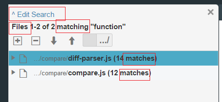
In the search panel, verify the tool tips stings as below.

In the search result panel, click on "Edit Search" and then click on "Switch to Replace Mode". Verify the display strings and tool tips as below.
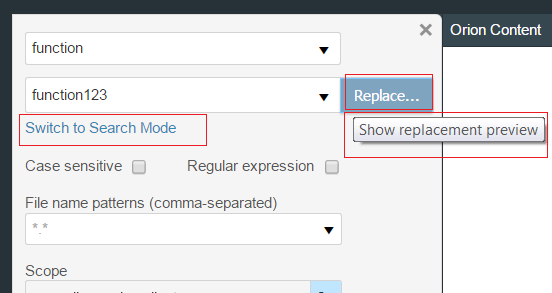
Type something to replace so that it gives back some results to preview. Verify the display strings and tool tips as below.

In the preview mode panel, cleck on "Replace Selected". Verify the display strings and tool tips as below.
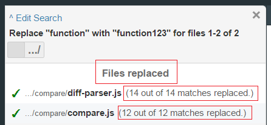
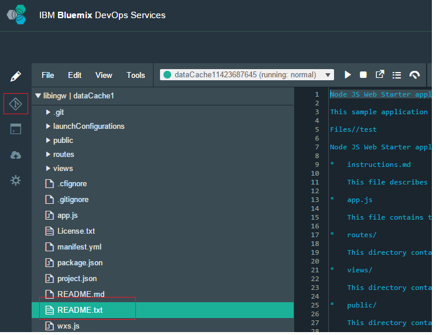


Click on the dropdown arrow on the right of the "Repository" label.

Click on the dropdown arrow on the right of the "Reference" label.

Click on the twistie on the local branch and hover on the checkot button.
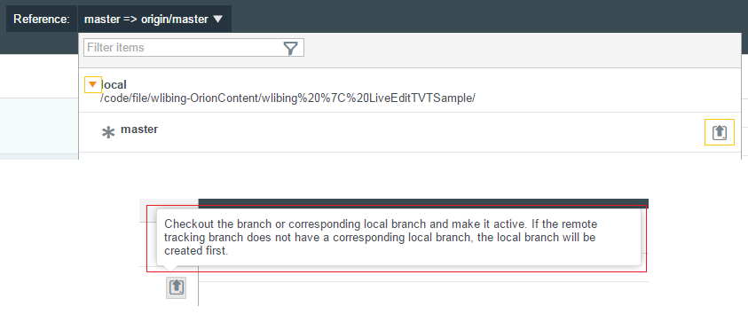
Hover on buttons on the left hand side of the page
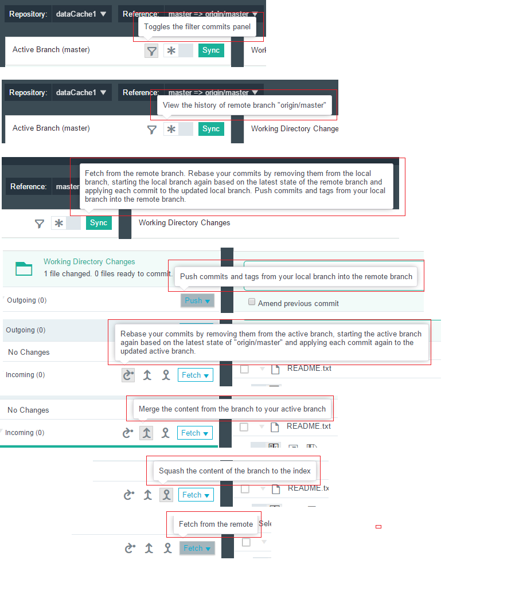
Click on the history button on the left hand side of the page. Hover on the history button again.
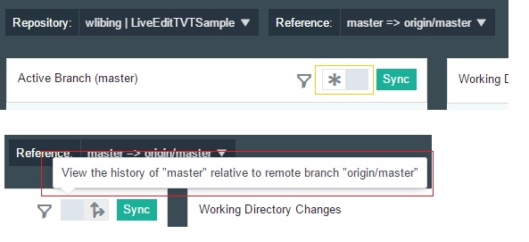
Click on the dropdown arrow on the right of the "Push" button and hover on the 4 items in the dropdown list

Click on the dropdown arrow on the right of the "Fetch" button and hover on the 2 items in the dropdown list
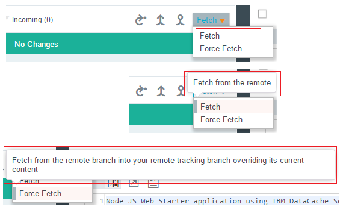
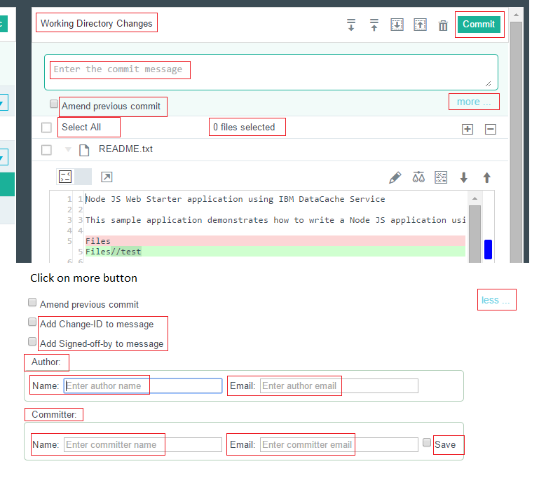
Click on the wrench button on the right of the tool bar.

Hover on buttons on the right hand side of the page
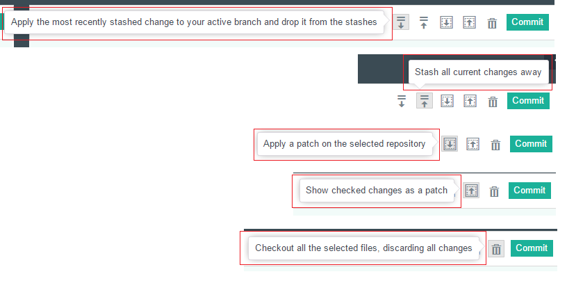
Click on a commit on the left hand side. Hover on buttons on the right hand side of the page

Click on a commit on the left hand side. Then press CTRL key and click on the second commit.
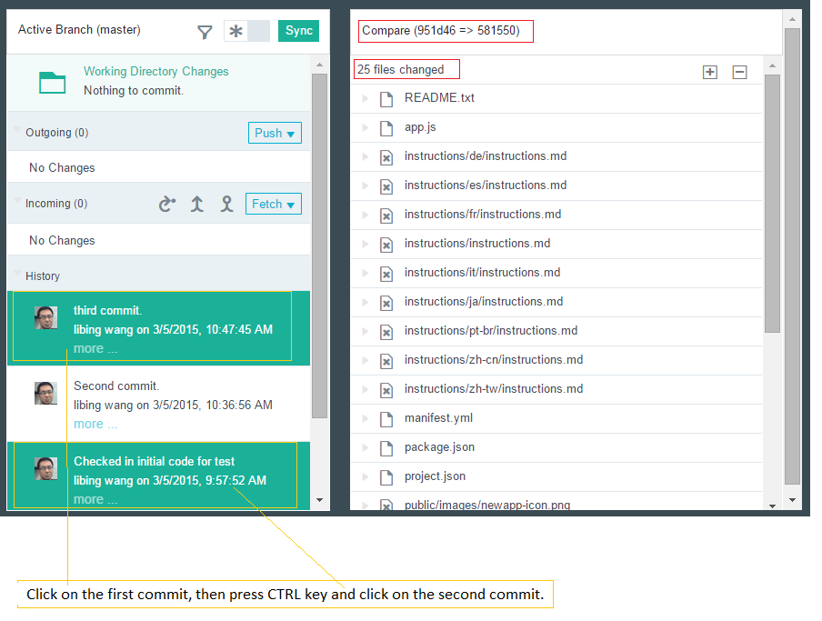
Hover on buttons on the compare section of the page

Click on the "Switch to side by side" button. Hover on buttons on the compare section of the page
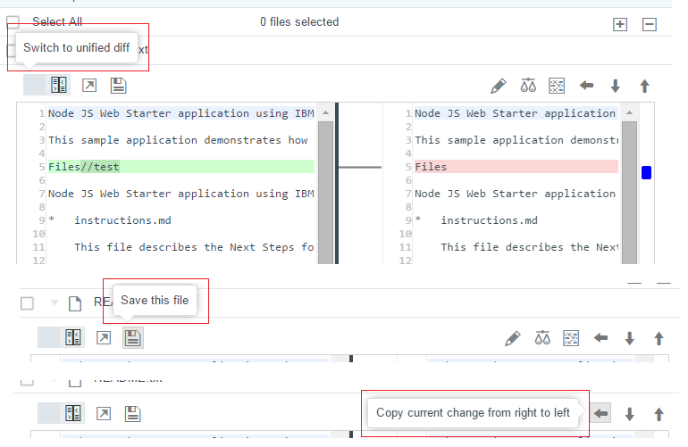